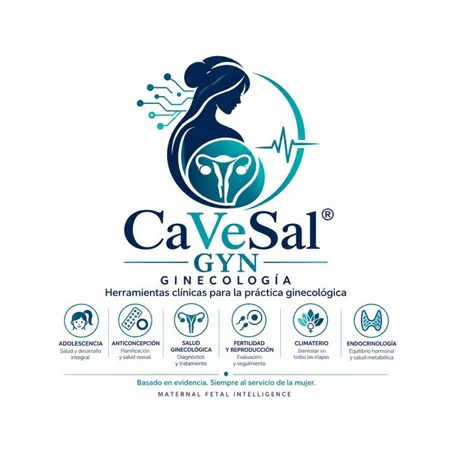
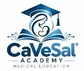

¡Hola, colega! Soy CaVeSal® IA. Conocé todo el ecosistema en cavesal.app: usá nuestras apps profesionales e invitá a tus pacientes a descargar gratis CaVeSal® Mamá y CaVeSal® Mujer.
Ecosistema profesional
Esta app en versión completa y las demás en versión demo para probarlas gratis. Las claves se activan por app.

Invitá a tu paciente
Dos apps gratuitas del ecosistema CaVeSal, según el momento de cada paciente, más el ecosistema completo.
Estas Aplicaciones orientan a la paciente y la acercan al profesional de salud que la cuida — no reemplazan su criterio.
Tutoriales y activación
Guías paso a paso de cada app y cómo activar tu clave.
Autor clínico
Formación en Medicina Materno-Fetal. Metodología FMF/Nicolaides y guías: ACOG, FIGO, NICE, IADPSG, ATA, WHO, EBCOG, Medicina Fetal Barcelona.
- Título de grado Médico y Cirujano (Paraguay) con homologación al título de grado español Licenciado en Medicina.
- Especialista en Ginecología y Obstetricia.
- Postgrados en Ecografía General y Gineco-Obstétrica, Endocrinología Ginecológica y Reproductiva, Didáctica en Educación Superior y Salud Pública.
- Formación en Inteligencia Artificial y herramientas digitales emergentes aplicadas a la práctica profesional.
- Capacitador Nacional en Salud Sexual y Reproductiva, Código Rojo y Atención Prenatal.
- Miembro del Comité Técnico Nacional de Inmunización (Paraguay).
- Docente universitario de grado y posgrado en Ginecología y Obstetricia, Ecografía, Endocrinología Ginecológica y Reproductiva.
- Miembro del Comité Científico de FLASOG (2024–2026).
- Miembro de Sociedades Científicas en Paraguay (FPGO, SOGON, SOGIA, SODIAP y SEGIRP).
- Presidente de la FPGO (2023–2026).
Bases clínicas
Cada función cita sus fuentes al pie de su resultado. Tocá una función para ver sus referencias completas.
Calculadora
- Fertilidad — Ovulación, progesterona y trigger
- Preconcepcional — Semáforo, ácido fólico y panel hormonal
- Fertilidad — Estudio de la pareja infértil
- Fertilidad — SOMP: criterios, fenotipo y HOMA-IR
- Preconcepcional — Anti-Tg, autoinmunidad y trombofilia
- Climaterio — Escala MRS
- Salud ginecológica — Masa anexial: O-RADS, IOTA y GI-RADS
- Salud ginecológica — Mama, cérvix y endometrio
- Salud ginecológica — Útero: MUSA y miomas FIGO
- Oncología ginecológica — Estadificación FIGO
- Climaterio — Calculadora de THM
- Anticoncepción — Elegibilidad de métodos (MEC)
- Infecciones genitales bajas
- Endocrinología — Incretinas
- Salud ginecológica — Endometriosis
- Salud ginecológica — Prolapso genital: POP-Q y conducta
- Salud ginecológica — Incontinencia urinaria
- Adolescencia — Pubertad precoz
- Endocrinología — Diabetes fuera del embarazo
- Ficha de la paciente — Factores de riesgo
- Ginecología — Sangrado uterino anormal (PALM-COEIN)
- Endocrinología — Amenorrea primaria y secundaria
- Infecciones — Enfermedad pélvica inflamatoria
- Ginecología — Dolor pélvico agudo y crónico
- Laboratorio — Laboratorio por cuadro
- Oncología — Marcadores tumorales
- Imágenes — Eco ginecológica
- Climaterio — Densitometría ósea
- Fertilidad — Inducción de la ovulación
- Fertilidad — Hiperestimulación ovárica
- Anticoncepción — Métodos y Pearl
- Oncología — Cáncer hereditario
- Oncología — Cuello uterino MSPBS 2025
- Climaterio — Elección del progestágeno
- Anticoncepción — Emergencia
Las guías completas de ginecología, endocrinología y fertilidad están en la Historia Clínica CaVeSal® y en CaVeSal® Academy.
Aviso legal
CaVeSal® es una herramienta de apoyo clínico para profesionales de la salud capacitados. No reemplaza el juicio clínico del médico tratante ni la evaluación individualizada. Todas las decisiones clínicas son responsabilidad exclusiva del profesional de la salud.
Propiedad intelectual: CaVeSal® organiza de forma original, en guías de acceso rápido y calculadoras, las clasificaciones, escalas y recomendaciones de las referencias citadas en cada ficha. Algunas tablas se reproducen textualmente o traducidas de su fuente original; en cada caso se indica la cita completa. Las referencias a publicaciones científicas tienen fines exclusivos de atribución académica y validación clínica.
El software, el diseño, la interfaz, los textos, los gráficos y la lógica de esta aplicación son propiedad de Dr. Carlos Vera Salerno y están protegidos por la Ley N.º 1328/1998 de Paraguay y los tratados internacionales aplicables (Convenio de Berna). CaVeSal® es una marca registrada. Queda prohibido copiar, reproducir, distribuir, modificar, descompilar, realizar ingeniería inversa, divulgar por cualquier medio, o crear obras derivadas de esta aplicación o de cualquiera de sus componentes, total o parcialmente, sin autorización previa y por escrito del titular. Cualquier uso no autorizado podrá dar lugar a las acciones legales correspondientes.
La mención de guías, sociedades científicas o instituciones (ASRM, ESHRE, ATA, OMS, FIGO, ACOG, NAMS, MSPyBS Paraguay, FLASOG, entre otras) tiene fines exclusivamente de atribución bibliográfica. Ninguna de estas instituciones patrocina, avala ni certifica CaVeSal®.
La mención de sociedades científicas y guías clínicas en este perfil y en la aplicación (FMF, ACOG, FIGO, FPGO, FLASOG, entre otras) tiene fines exclusivamente de atribución académica y bibliográfica. Ninguna de estas instituciones patrocina, avala ni certifica CaVeSal®.